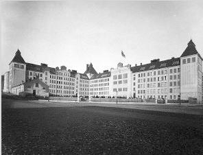
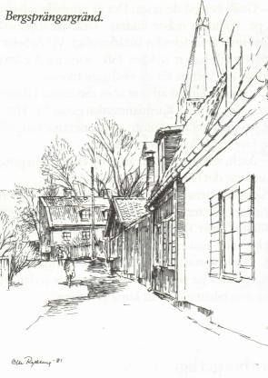
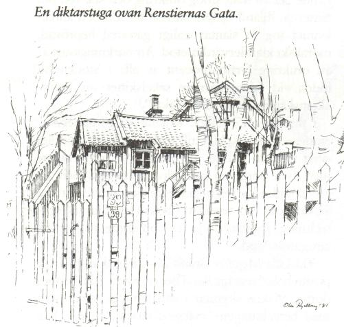

Södermalm i tid och rum
Bergsprängargränds och Sofia Trappgränds småkåkar trycker nedkrupna i Vita Bergens nordslänt i skuggan av Guds hus där uppe på bergskrönet. Sommartid övervälvs de av parkträdens lövmassor men nu lyser vårhimlen igenom de knoppande trädens grenverk.
När jag tecknar av stugorna här inpå Skånegatan är förfallet på flera håll påtagligt. Yttertak och väggar har bågnat av ålderdomssvaghet. Tegelpannor ligger på trekvart och är i många fall skadade. Färgen på foderbräderna har flagnat betänkligt. Allt vittnar om många årsväxlingars nedbrytande ver- kan på träet. Denna patina som får poeters och konstnärers hjärtan att klappa men de boende att våndas när taket läcker och det blåser genom väggarna.
Skånegatan 108 är förbjudet som åretruntboställe. Vedbodlängor och dass grinar i ansiktet på socialförvaltningen. Så får man inte bo om man ska följa reglerna.
En äldre dam, eller om jag idylliserar, en liten tant Grön, går och småpysslar i sin sluttande trädgård.
Hon plockar undan nedfallna kvistar och river bort begynnande ogräsbestånd. En äldre pensionär på vårpromenad stannar av sina steg. Över det skeva spjälstaketet byter han några ord med tant Grön. Hon kanske heter Karlsson eller von Cruzenstolpe, vad vet jag. Här harmonierar ett sagonamn bättre med miljön. Farbror Groen på andra sidan berget känner vi till.
Vårsolen har ännu inte lockat fram de första blomstren ur den väntande myllan, såsom på parkens sydslänt. Där skyltar redan snödroppar, krokus, scilla och vårlök i kolonistugornas täppor.
Kring sekelskiftet hade i Vita Bergen några religiösa organisationer fått ett fäste för praktisk verksamhet. Skånegatan 110, det lilla reveterade bostadshuset på bergskanten, ägdes på 1890-talet av Stockholms Evangeliska Lutherska Missions- förening, som hyrde ut lokalen till Svenska Diakoniss-sällskapet. På 1930-talet var stugan värmestuga åt arbetslösa. Senare blev den privatbostad.
På andra sidan gatan, mitt emot de här husen, ligger hörnhuset Skånegatan 105. Det är HSB:s första byggnad i Stockholm, uppförd 1923-1924 med Sven Wallander som arkitekt.
|
Bebyggelsen kring Vita Bergen har också mindre lyckade sidor. 1910 byggdes, som jag tycker,
hiskeliga Sofia folkskola. Dess kolossala form påminner om senare tiders elefantiasisbyggen av
regionsjukhus och liknande komplex. Den anstaltsliknande skolan har fostrat barn som indoktrinerats med
bonderomantiska Sörgården och Önnemo by. Det måste ha skurit sig i tankebanorna hos de små liven,
uppvuxna i trångboddhetens enrummare. Kanske stugfolkets barn ändå stod närmare Sörgården än
arbetarkasernernas. Avståndet till statarbarnen var kort.
En undersökning 1895 visade att 38 980 personer, eller 24 procent av Stockholms mantalsskrivna arbetarbefolkning var inneboende. Detta sätt att bo var nu pressat till det yttersta. "Det förvandlar hemmet till en plats där män och kvinnor djuriskt insomna om hvarandra utan att någon morgondag kan gifva förhoppning om något bättre", som det står i Lundins "Nya Stockholm". |
 |
I Albert Lindhagens omvälvande stadsplaner för Stockholm, presenterade 1866, avsågs Ringvägen skära tvärs igenom Vitabergsområdet. Bergen tycks dock ha blivit ett för stort hinder att övervinna och idén slängdes i papperskorgen. Tack för det! Partier av Stora och Lilla Mejtens Gränd fick därmed vara kvar, relativt orörda. Flera hus har ändå rivits, särskilt på Stora Mejtens Gränd, som genom kvarteren norr om Ploggatan förr nådde fram till Bondegatan.
|

|
"Denna trakt är absolut olik det öfriga Stockholm - när man går där tror man sig förflyttad till ett fattigt fiskläge ute i skärgården bland klipporna" Så skriver Georg Nordensvan i "Mälardrottningen" 1896 om Vita Bergen. Bergsprängargränd, som före kyrkobygget nådde ner till Stora Mejtens Gränd, hyste vid denna tid folk som levde under de uslaste förhållanden. I nu rivna nummer 18 bodde då sjömannen Johan Andersson och hans hustru. Förutom två egna barn hörde till familjen ett fosterbarn. Mantalsuppgifterna anger inget namn utan meddelar lakoniskt: "fosterbarnet 4339", registrerat som ett opersonligt kolli. Hemmahörande på samma adress var en arbetskarl med sju barn som kunde leka med "4339". Familjen fick fattigunderstöd liksom en arbetarhustru och en tvätterska i samma hus. För en av husets arbetslösa var årshyran 108 kronor - en nog så betungande utgift för den som saknade inkomster. I den svåra belägenhet som folk befann sig i hände det att man smög omkring och stal ved om nätterna. Ibland hjälpte barnen till. En och annan kvinna tog in slantar enligt gammal beprövad, moraliskt klandervärd metod. Anmärkningsvärt är att omkring fyrtio procent av alla i Stockholm födda vid tiden närmare sekelskiftet var utomäktenskapliga barn eller "oäkta". |
|
I nummer 17 ställde Kristna Välgörenhetsföreningen fria bostäder till förfogande för verkligt svårt utsatta. Husets "gynnade" var en arbetare med fyra barn, en arbetslös tvätterska och en arbetaränka. De senare hade tre barn vardera att dra försorg om. En annan tvätterska (denna yrkesbeteckning kunde dölja en prostituerad) erhöll fattigunderstöd. Vid Lilla Mejtens Gränd 26-28 bodde 44-åriga positivhalarhustrun Ika Theoorowicz och hennes dotter. Maken skymtar i annalerna kort och gott med beteckningen "mannen afrikan". Hade han gått under jorden? Hennes titel är en talande, för att inte säga spelande, bild av Vita bergsfolkets gräsrotsringhet. Hon hyrde rum av husets innehavare, målarmästaren Ernst Hoborg. Han var närmare 60 år och hade sju barn att försörja.
|
 |
23:an hyste en arbetare vid Liljeholmens stearinfabrik och en järnarbetare vid Finnboda. Trädgården på Lilla Mejtens Gränd 5 arrenderades av förre lantbrukaren Carl Nestius. I nummer 7 höll 43-årige mjölkarrendatorn Carl Hejseman till. Hans arrende gällde Ersta gård, där numera Östberga bostadsområde ligger. Hustru, piga och en häst ingick i hans revir. 275 kronor kostade bostaden. Mjölken körde han om morgnarna till uppsamlingsstället på Blekingegatan 5, dit bönder och mjölkarrendatorer levererade sina mjölkstinna plåtflaskor. Efter vederbörlig kvalitetskontroll vidarebefordrades mejeriprodukterna till minuthandlare och andra köpare.
Låt oss ta en tur upp till Vita Bergens sydslänt mot Hammarbysjön. Det är en vindstilla söndagseftermiddag försommaren 1895. Bland folk som slagit sig ner i backen med sina medhavda matsäckskorgar träffar vi en boktryckeriarbetare anställd hos Ivar Haeggströms boktryckeri på Repslagargatan. Han pratar med den 74-åriga skoarbetarhustrun som sitter till höger om honom. Hon ondgör sig över den förvildade ungdomen ... Annat var det när jag var ung. En tjugoårig flicka i ljusblå schalett som plockar fram kaffekoppar och ställer i ordning för picknicken fnyser åt deras prat.
- Gnäll inte på de unga. Det är samhället det är fel på. Politiken måste ändras. Tänk på superiet! Brännvinet är alldeles för lättåtkomligt. Vi i Arbetarrörelsen vill ha ett nyktert folk, som med vakna sinnen skall kämpa för en värdigare tillvaro.
Den unga damen arbetar som sättarinna i Arbetarnas Tryckeri på Karduansmakargatan 11. Hennes kavaljer, kollegan inom tryckeribranschen, vill inte vara med på helnykterheten.
- Äsch, man har väl rätt att ta sig en sup nan gång ibland när det blir för djäkligt.
Samtalet fortsätter till gråsparvars, talgoxars och bofinkars kvitter. Solen går snart i moln och ett kyldrag sveper in över Vita Bergens backar. Folk packar ihop sina matsäckskorgar och drar hem till sitt. Carl Nestius går i femmans trädgård och stökar, sätter på sig västen och fortsätter sedan att ansa sina rabatter och att kupa potatisen.